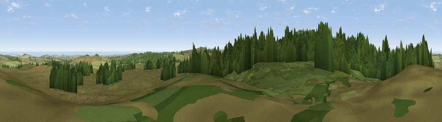

Viewpoint near Chillingham
#3839 in England · top 20% of its area beats it · near ChillinghamWhere it is
The exact computed spot (NU 09575 26075). Click the marker for map links.
The view, rendered

A 360° render of this exact spot computed from the terrain model, tree cover and land cover — summer colours, afternoon light, calibrated against photographs of famous viewpoints. Real trees, hedges and buildings will differ in detail.
The panorama
Grey silhouette: terrain skyline in each direction (720 bearings, Earth curvature and refraction included). Dashed green: skyline with trees (+15 m) and buildings (+8 m) as obstacles. Blue strip: how far the ground is visible on each bearing.
Where the view opens
Wedge length = distance to the farthest visible ground on that bearing (vegetation-aware). Rings at 10, 25 and 50 km.
What fills the view
50% grassland · 43% woodland · 3% water · 3% cropland
Angular shares of the visible panorama (visual magnitude), not map area. Landscape diversity 0.41 (0–1 Shannon).
Key numbers
More beautiful places nearby
The staircase of upgrades: each row has a higher view potential than everything closer. Driving times are estimates from straight-line distance, calibrated against real road routing — check an actual route before setting out.
| Place | Direction | Drive | Score |
|---|---|---|---|
| Viewpoint near Chillingham | WSW · 2 km | ~4 min | 88.1 |
| Viewpoint near Easington | SSE · 124 km | ~148 min | 90.2 |
| The Knoll | S · 541 km | ~488 min | 91.0 |
55.52832, -1.84988 · source: screening · position refined by local search. Computed location — check access rights before visiting.